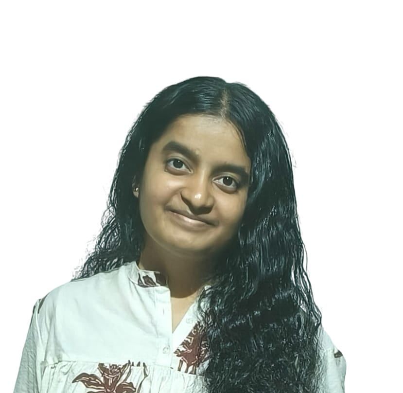

Hello, I am
S S Bindu Yajman
Runner-Up CodeVed|She-Fi Scholar|Fresher at GSSSIETW|
Education
GSSS Institute of Engineering and Technology for Women,Mysuru - (2025 - 2029) -
B.E. in Computer Science and Engineering, SGPA: 9.48
Bright PU College - April 2024
Senior Secondary Education, Percentage:94.8%
St.Francis ICSE School - July 2022
Secondary Education, Percentage:95.2%
Experience
Scholar|She-Fi
Literary Club | Class Representative Sept. 2025 – Present
Student Intern Trainee | The National Institute of Engineering,Mysuru July 2025
Achievements
Runner-Up - CodeVed(coding competition)
LeetCode Rating: 1519, actively improving
Solved 200+ programming problems solved across various platforms
Finalist – State-Level Youth Parliament Competition (Department of Parliamentary Affairs & Legislation, Department of Pre-University Education).
Qualified for the on site round of V-Vision Build-A-Thon
Won many inter-school Throwball Competitions
Made with